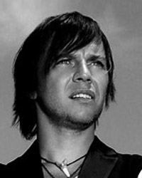
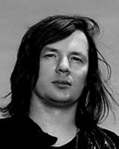
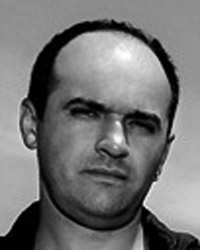
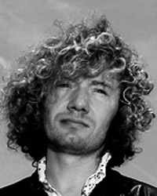

Ilya Lagutenko
He was born on 16/10/1968 in Moscow. Soon, his family moved to Vladivostok. Went to school with advanced study of the Chinese language. sang in the children's choir, which has traveled half the country. In 1992 he graduated from the Far Eastern State University majoring in "Oriental and African studies." He worked in the China and the UK as a consultant to business firms. In 1983, he founded the rock group called the "Moomin Troll", later changed to "Mummy Troll."
Eugene "Shift" Zvidenny
He was born on 11.12.1968 in Vladivostok. studied in high school N1. He started playing the bass guitar and keyboards in a school rock band "ABC." After high school, he studied at the Polytechnic Institute. Worked as computer graphics. Since 1985, he played in rock bands Vladivostok "Third Watch" and "Misty Stone", as well as recorded the albums these and other teams in the studios of "Tai-chu" and "Decade." In 1990 he took part in the recording of their second album magnitoalboma "Moomin Troll" "Do Yuyu." In autumn 1996, received an offer from a group of "Mummy Troll". He plays in a band with the first concerts in Vladivostok (summer 1997).
Oleg Pungin
He was born on 16/11/1968 in Vladivostok. From 1st to 10th grade playing in the children's ensemble "Happy Childhood." At the end of the 80th - after school - worked in the Song and Dance Ensemble Pacific Fleet. At the beginning of the 90th - he worked in radio, where he illuminations, advertising spots and recorded by various artists. was the founder of one of the Vladivostok recording studios. He worked as an arranger and sound engineer on the recordings of many bands of Vladivostok. summer of 1997 received an offer to play a few gigs with "Mummy Troll" in the Far East, after which he became a permanent member of the group.
Yuri Tsaler
He was born on 22.05.1973 in Pervouralsk (Sverdlovsk region). Studied in musical college named. Tchaikovsky piano. worked one shift baker at bread-baking. played with his father, a famous jazz musician at the famous bar in front of a motley audience, among which often come across local thugs. later created the group "Bird Zoo." After the collapse of the group caused death bass player, went to Moscow, where he worked with Pavel Kashin. Kormil'tsev After Elijah, who was giving guitar lessons, and in 1997 he received an offer from the "Mummy Troll". Plays in the fall of 1997. In 2005 he released an album with recordings of "Birds of Zu."